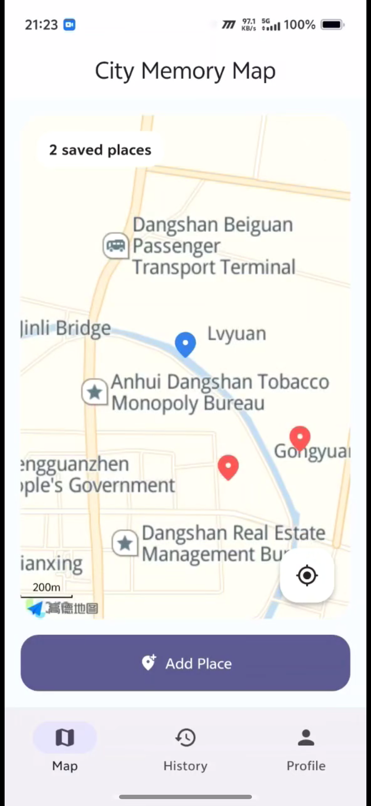
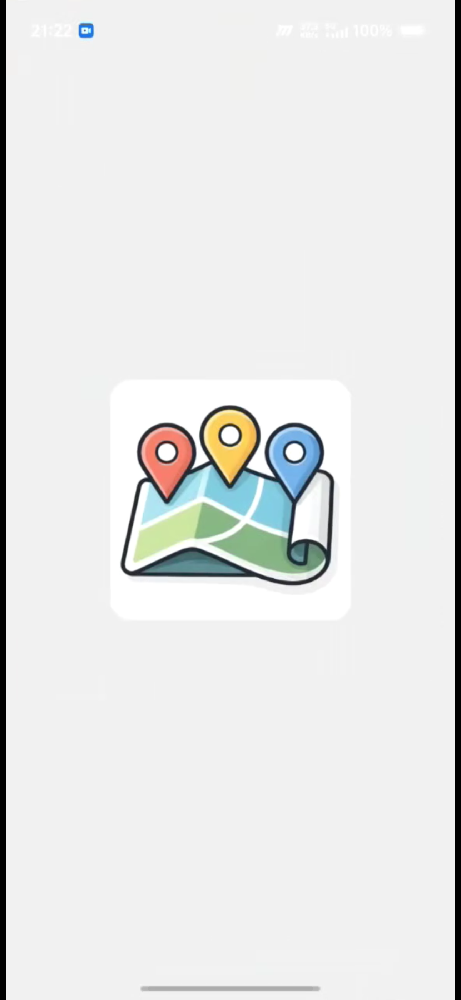
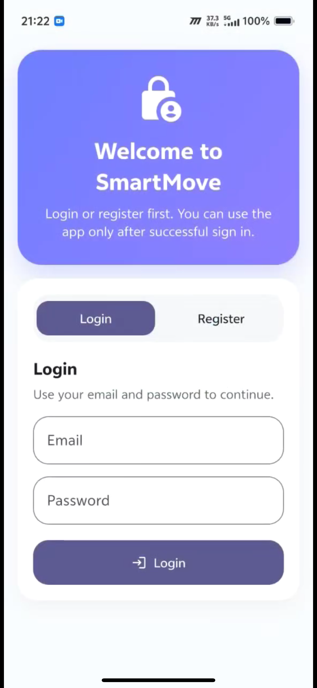
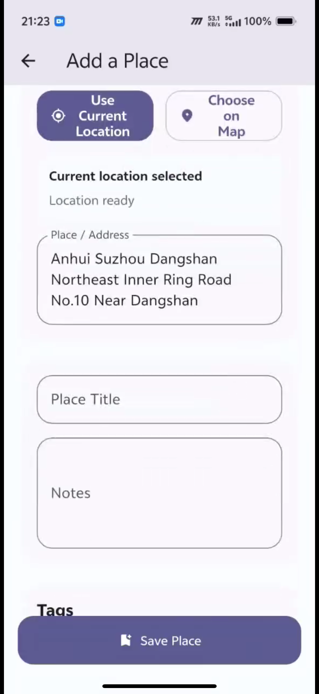
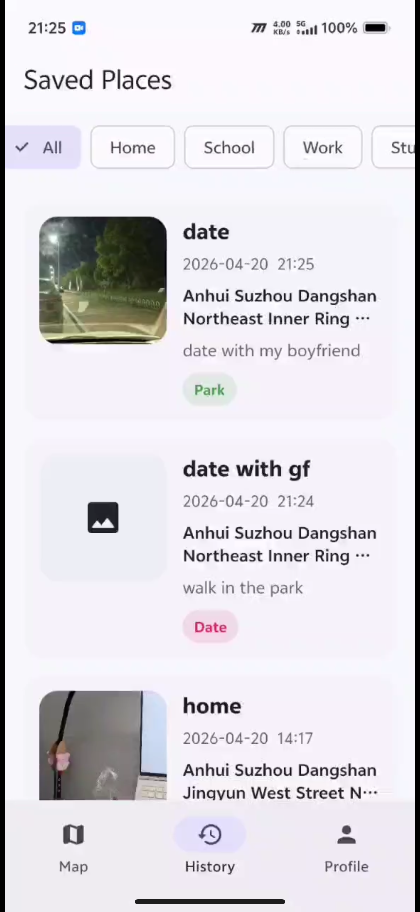
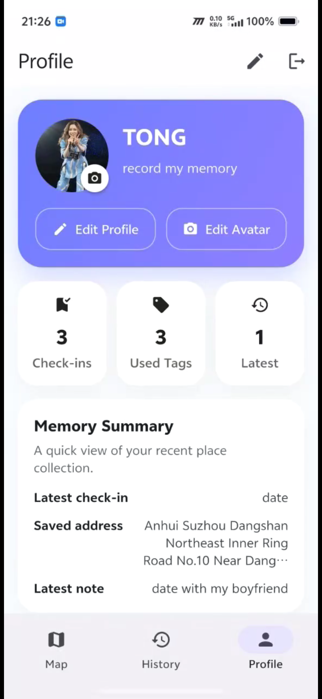

Capture places.
Keep memories.
Move meaningfully.
SmartMove is a Flutter mobile app that turns everyday locations into personal memory points. Users can save a place using live location or map selection, attach notes and photos, organise it with tags, and revisit their journey later through a simple, location-aware interface.

The Problem
Interesting places are easy to forget. Most map apps are good for navigation, but not for building a personal memory trail.
People often visit meaningful locations, but later forget the context, feeling, or details attached to them.
Image galleries rarely capture why a place mattered, how it was found, or how it connected to daily routines.
SmartMove reframes mobile location sensing as a way to document personal experience in the connected environment.
The Solution
SmartMove allows the user to save a place using the phone’s location capabilities or by selecting a point on the map. Each entry can include a title, note, image, address, and tags, creating a lightweight but meaningful digital place archive.
Current location and map-based selection connect the app directly to the user’s physical surroundings.
Users return to the app over time to record, organise and revisit places that matter to them.
The app gradually turns isolated place records into a personal story of movement, memory and routine.
Key Features
Designed to meet the assessment brief while keeping the experience clear, personal and practical.
Live map home screen
The user sees a large map, saved places, and a current-location action for quick re-centering and orientation.
Add place from current location or map pick
New locations can be captured from the device’s present position or selected manually on the map for flexibility.
Notes, photos and tags
Each saved location becomes a richer memory entry with text reflection, image attachment and personal categorisation.
History and detail pages
Saved places can be browsed later, encouraging repeat use and giving the app a clear after-visit value.
Editable profile
The profile area allows custom name, signature and avatar, making the app feel more personal and curated.
Login and logout flow
An auth gate ensures users enter through a login/register screen before reaching the main application views.
User Journey
This flow can be referenced in your presentation when explaining the app narrative and interaction design.
Enter the app
The user opens SmartMove, sees the splash screen, and signs in through the login/register gateway.
Capture a place
A location is selected either from the current GPS-based position or directly from the interactive map.
Enrich the entry
The user adds a title, note, optional photo, and tags to give the location personal meaning.
Revisit over time
The memory remains available in the history and detail pages, supporting future reflection and repeated interaction.
App Screens
These six core screens show the full user journey: splash, authentication, map overview, adding a place, saved history, and profile personalisation.

Splash Screen
The app opens with a branded splash screen that introduces the project before the main flow begins.

Login / Register
Users enter the app through an authentication gate, making the opening flow clearer and more complete.
Home Map
The home screen shows the main map, current location, saved place markers, and quick access to adding a new entry.

Add a Place
Users can create a memory entry with location, title, notes, tags and optional media, linking place with personal meaning.

Saved Places
The history page organises past records over time, showing that the app supports repeat use and place-based memory logging.

Profile
The profile page makes the app feel personal through editable identity details, memory summary cards and account actions.
These six screens summarise the complete user flow from entry to ongoing use, making the project easy to explain in both GitHub Pages and the final presentation.
Technical Integration
Built as a multi-view Flutter application with dedicated pages for home, add-place, history, detail and profile flows.
Uses phone location capabilities and map interaction to connect the app to the user’s physical environment.
Map rendering and reverse geocoding extend the app beyond a purely local UI and add real spatial context.
Why It Fits the Brief
SmartMove aligns with the Connected Environments theme by using mobile sensing, map services, user interaction, and data recording over time to support a meaningful real-world task. Rather than acting as a generic map, the app focuses on personal context, place memory and repeated engagement.
This section is useful when explaining the project in your presentation, README and submission materials.